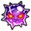

VS 푸딩
Level: 100+
Stage 3:
선제 행동:

[공백][힘][기][속][심][지][G][고기][연][폭탄] 슬롯을 [방해][마비] 슬롯으로 변환

6턴 동안 남은 체력 1로 버티기 효과
Stage 4:
초기 상태: 반 오거

99턴 동안 상태이상 무효

7턴 동안 마비

중간단은(는) 받는 데미지 3배의 기절
6턴 동안 체인 계수의 초기 수치를 1.1배, 체인 계수의 상한 수치를 1.1배로 고정시킨다

3턴 동안 체인 계수가 3 이하일 경우 공격력 90% 감소
4턴 동안 선원 캐릭터와 선장 교체
Stage 5:
초기 상태: 샬롯 푸딩

일반 공격 이외의 데미지 1
상태이상 무효

격파(전투 불능)계의 필살기 무효

비율 데미지 내성 100%
약점 타입: 강인형
선제 행동: 일당의 체력이 60% 이상일 때

필살기 턴을 3턴 되돌리기
3턴 동안 대상의 상태 이상 중, 특정 상태 이상 턴이 2턴 감소(대상의 상태 이상: 슬롯 영향 증폭)

2턴 동안 탭 타이밍 배리어(GREAT 4회)

10턴 동안 상단의 선장효과 무효

1턴 동안 받는 데미지 무효

10턴 동안 방어력 10000배
10턴 동안 남은 체력 1로 버티기 효과
필살기 턴을 3턴 되돌리기
3턴 동안 대상의 상태 이상 중, 특정 상태 이상 턴이 2턴 감소(대상의 상태 이상: 슬롯 영향 증폭)
2턴 동안 탭 타이밍 배리어(GREAT 4회)
10턴 동안 상단의 선장효과 무효
1턴 동안 받는 데미지 무효
1회까지

유리 효과, 축적치 해제
[공백][힘][기][속][심][지][G][고기][연][폭탄] 슬롯을 [초 방해] 슬롯으로 변환
Level: 1-59
Stage 3:
선제 행동:
1턴 동안 남은 체력 1로 버티기 효과
Stage 4:
선제 행동:
2턴 동안 마비
Stage 5:
초기 상태: 샬롯 푸딩
약점 타입: 강인형
선제 행동:
2턴 동안 상단의 선장효과 무효
Level: 60-79
Stage 3:
선제 행동:
2턴 동안 남은 체력 1로 버티기 효과
Stage 4:
선제 행동:
3턴 동안 마비
Stage 5:
초기 상태: 샬롯 푸딩
약점 타입: 강인형
선제 행동:
필살기 턴을 1턴 되돌리기
1턴 동안 탭 타이밍 배리어(GREAT 2회)
5턴 동안 상단의 선장효과 무효
Level: 80-99
Stage 3:
선제 행동:
[공백][힘][기][속][심][지][G][고기][연][폭탄] 슬롯을 [방해][마비] 슬롯으로 변환
5턴 동안 남은 체력 1로 버티기 효과
Stage 4:
초기 상태: 반 오거
99턴 동안 상태이상 무효
6턴 동안 마비
중간단은(는) 받는 데미지 1.5배의 기절
5턴 동안 체인 계수의 초기 수치를 1.1배, 체인 계수의 상한 수치를 1.1배로 고정시킨다
2턴 동안 체인 계수가 2.75 이하일 경우 공격력 90% 감소
2턴 동안 선원 캐릭터와 선장 교체
Stage 5:
초기 상태: 샬롯 푸딩
99턴 동안 일반 공격 이외의 데미지 1
99턴 동안 상태이상 무효
99턴 동안격파(전투 불능)계의 필살기 무효
99턴 동안비율 데미지 내성 100%
약점 타입: 강인형
선제 행동: 일당의 체력이 70% 이상일 때
필살기 턴을 2턴 되돌리기
3턴 동안 대상의 상태 이상 중, 특정 상태 이상 턴이 1턴 감소(대상의 상태 이상: 슬롯 영향 증폭)
1턴 동안 탭 타이밍 배리어(GREAT 4회)
8턴 동안 상단의 선장효과 무효
1턴 동안 받는 데미지 무효
6턴 동안 방어력 7000배
6턴 동안 남은 체력 1로 버티기 효과
필살기 턴을 2턴 되돌리기
3턴 동안 대상의 상태 이상 중, 특정 상태 이상 턴이 1턴 감소(대상의 상태 이상: 슬롯 영향 증폭)
1턴 동안 탭 타이밍 배리어(GREAT 4회)
8턴 동안 상단의 선장효과 무효
1턴 동안 받는 데미지 무효